Main
- in R:
y ~ 1 + year, in eq: \(y = w_1x_1 + w_2x_2\)
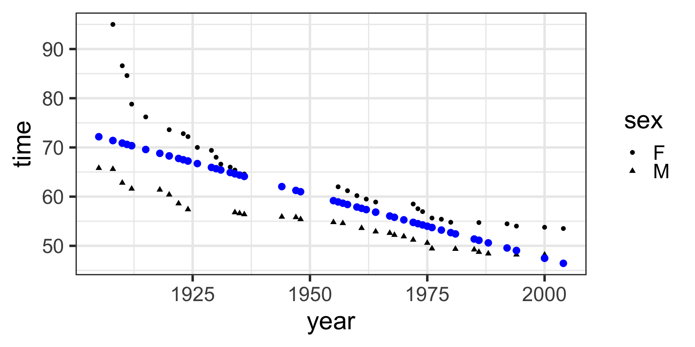
- in R:
y ~ 1 + sex, in eq: \(y = w_1x_1 + w_2x_2\)
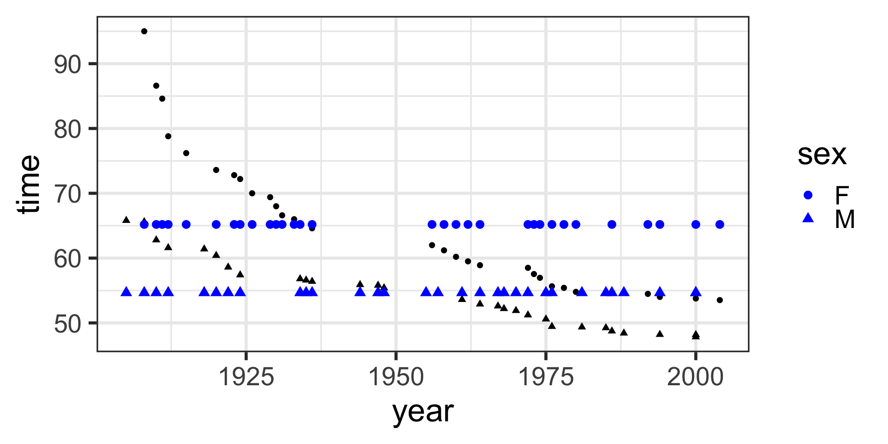
- in R:
y ~ 1 + year, in eq: \(y = w_1x_1 + w_2x_2 + w_3x_3\)
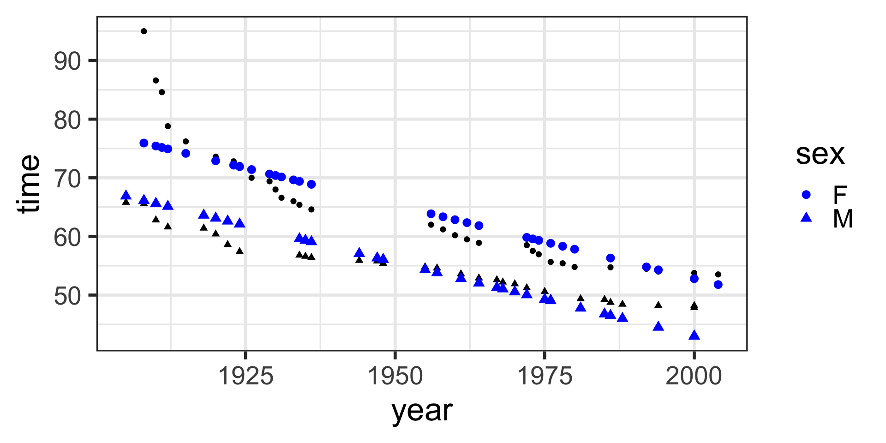
Data Science for Studying Language and the Mind
2024-09-17
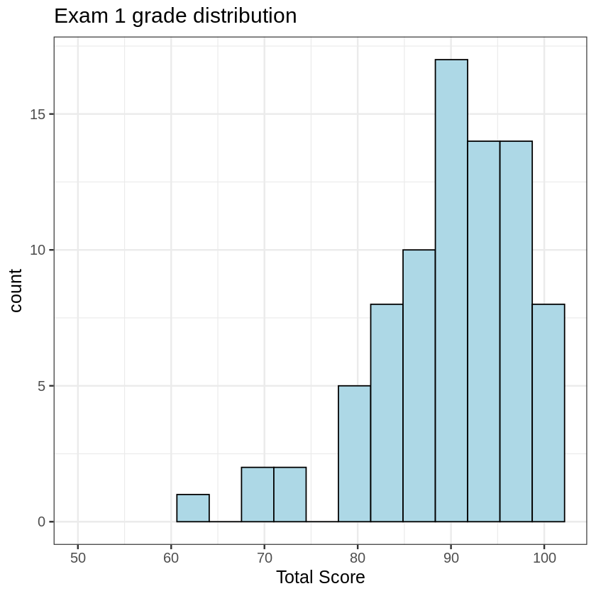
hereModel specificationSampling distribution and hypothesis testing with Correlation!
To review what we learned before break, let’s explore the relationship between Frequency and meanFamiliarity in the ratings dataset of the languageR package.
If there was no relationship, we’d say there are independent: knowing the value of one provides no information about about the other. But that’s not the case here.
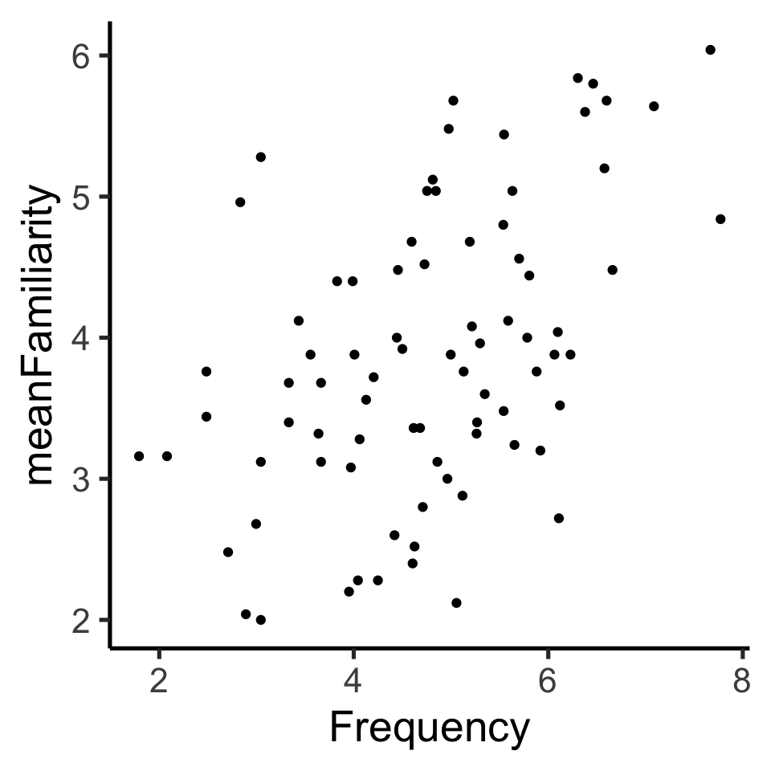
In a linear relationship, when one variable goes up the other goes up (positive); or when one goes up the other goes down (negative).
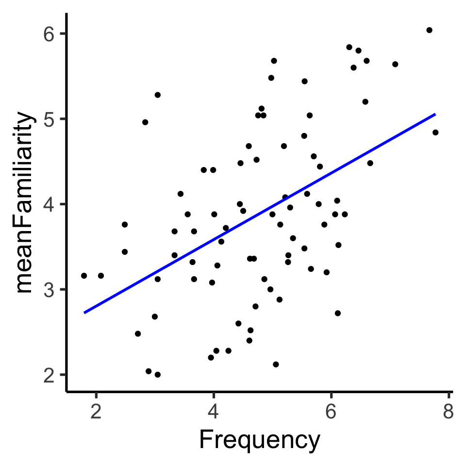
One way to quantify linear relationships is with correlation (\(r\)). Correlation expresses the linear relationship as a range from -1 (perfectly negative) to 1 (perfectly positive).
We can compute a correlation with R’s built in cor(x,y) function
Or via the infer pacakge.
Just like the mean — and all other test statistics! — \(r\) is subject to sampling variability. We can indicate our uncertainty around the correlation the same way we always have:
Construct the sampling distribution for the correlation:
Response: meanFamiliarity (numeric)
Explanatory: Frequency (numeric)
# A tibble: 6 × 2
replicate stat
<int> <dbl>
1 1 0.444
2 2 0.595
3 3 0.533
4 4 0.565
5 5 0.573
6 6 0.579Compute a confidence interval
Take a few minutes to try this yourself!
Use the infer way to visualize the sampling distribution and shade the confidence interval we just computed. Change the x-axis label to stat (correlation) as pictured below.
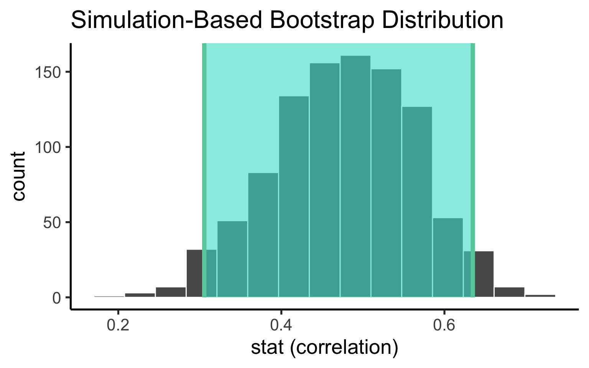
How do we test whether the correlation we observed is significantly different from zero? Hypothesis test!
Step 1: Construct the null distribution, the sampling distribution of the null hypothesis
Response: meanFamiliarity (numeric)
Explanatory: Frequency (numeric)
Null Hypothesis: independence
# A tibble: 6 × 2
replicate stat
<int> <dbl>
1 1 -0.189
2 2 0.0233
3 3 -0.0523
4 4 -0.0187
5 5 -0.0674
6 6 -0.0242Step 2: How likley is our observed value under the null? Get a p-value.
How do we test whether the correlation we observed is significantly different from zero? Hypothesis test!
Step 3: Decide whether to reject the null!
Interpret our p-value. Should we reject the null hypothesis?
Big picture overview of the model building process and the types of models we might encounter in our research.
Correlation is a simple case of model building, in which we use one value (\(x\)) to predict another (\(y\)).
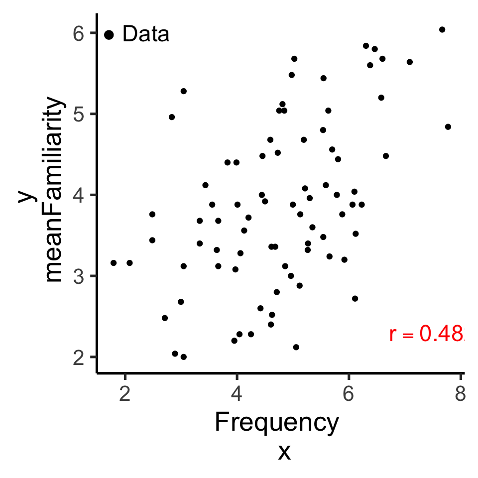
Even more specifically — formally, the model specification — we are fitting the linear model \(y = ax+b\), where \(a\) and \(b\) are free parameters.
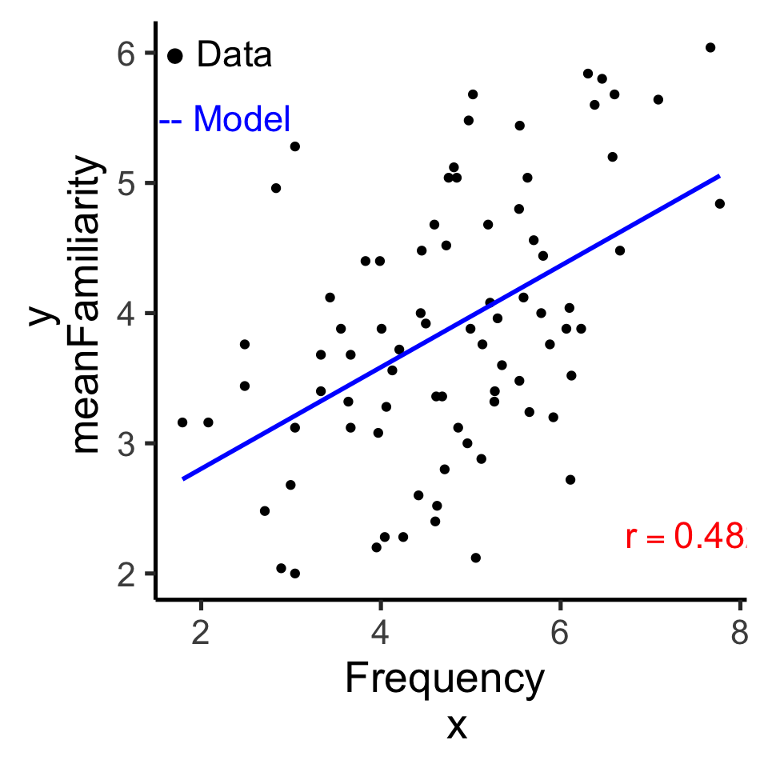
The link between correlation and linear models is understood when we normalize our variables with a z-score.
Frequency meanFamiliarity z_Freq z_meanFamil
1 4.204693 3.72 -0.4387602 -0.1573220
2 5.347108 3.60 0.4619516 -0.2742310
3 6.304449 5.84 1.2167459 1.9080703
4 3.828641 4.40 -0.7352500 0.5051623
5 3.663562 3.68 -0.8654029 -0.1962917
6 3.433987 4.12 -1.0464062 0.2323747Correlation is the slope of the line that best predicts \(y\) from \(x\) (after z-scoring)
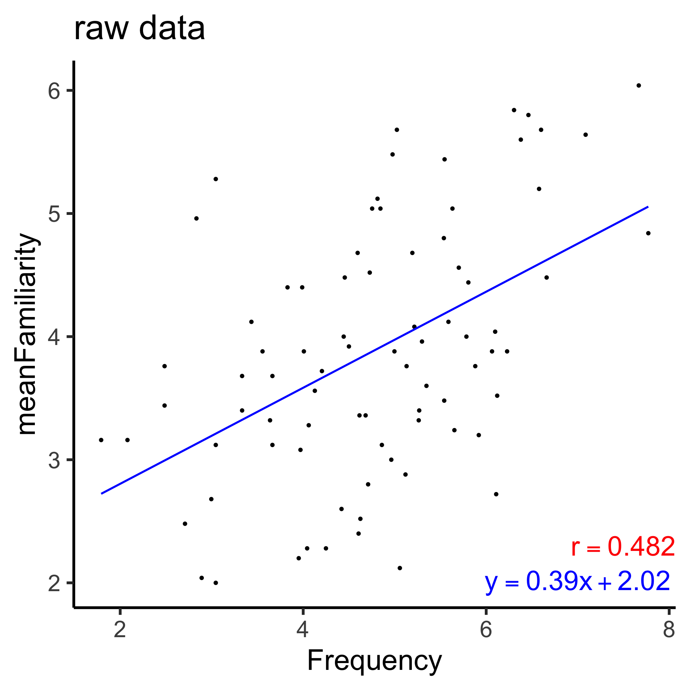
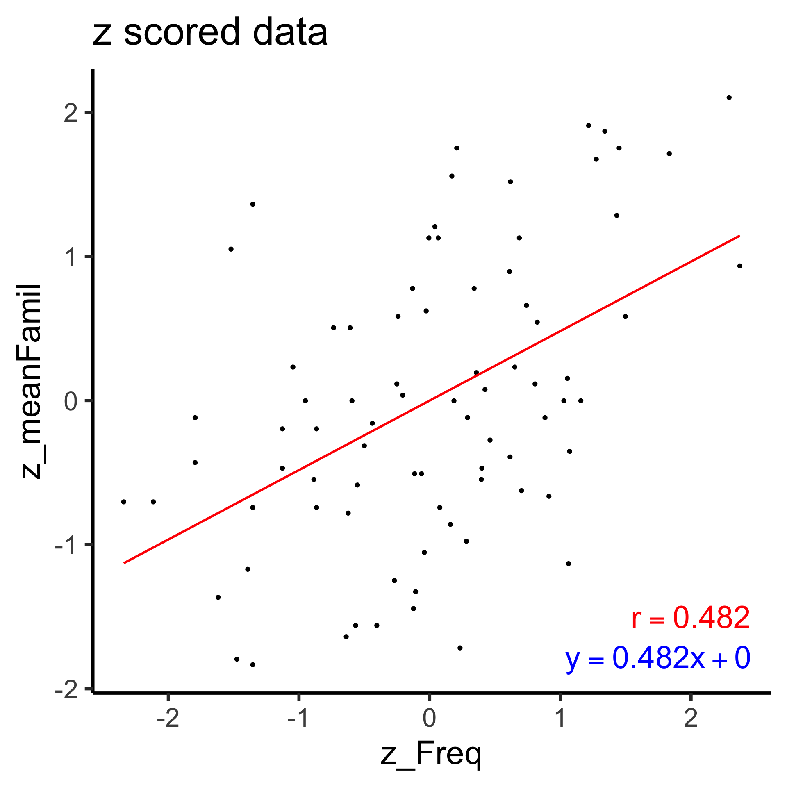
Model specification (this week): specify the functional form of the model.Model fitting: you have the form, how do you estimate the free parameters?Model accuracy: you’ve estimated the parameters, how well does that model describe your data?Model reliability: when you estimate the parameters, you want to quantify your uncertainty on your estimatesTake a few minutes to try this yourself!
Ask ChatGPT what type of model it is made with?

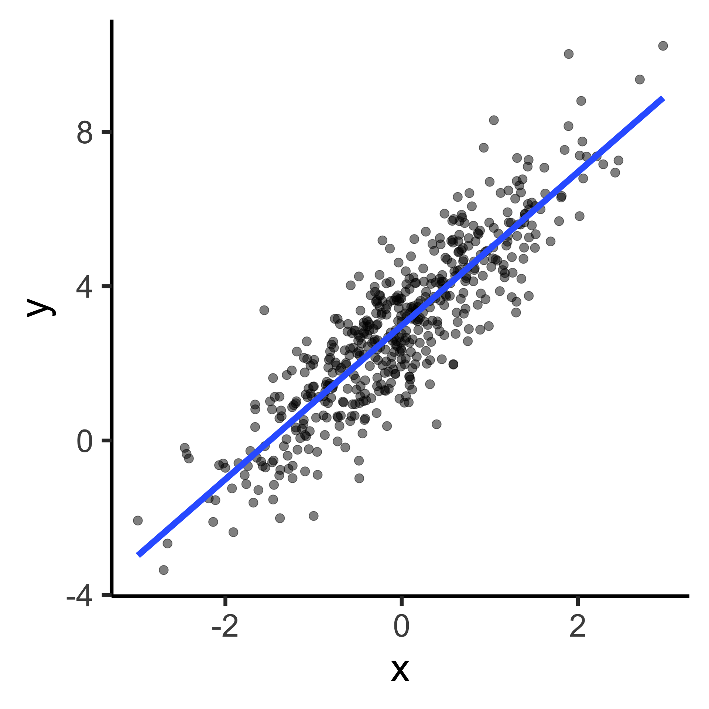
\(y = ax + b\) can be expressed \(y=\sum_{i=1}^{n}w_ix_i\)
Output (y) cannot be expressed as a weighted sum of inputs(\(y=\sum_{i=1}^{n}w_ix_i\) ); pattern is better captured by more complex functions. (But often we can linearize them!)


Take a few minutes to try this yourself!
Load the following data, which shows brain size and body weight for several different animals:
Explore the data to specify the type of model we should use to predict brain size by body weight.
Recall that model specification is one aspect of the model building process in which we select the form of the model (the type of model)
The following issues can also be considered part of the model specification process.
A well-specified model should be based on a clear understanding of the data, the underlying relationships, and the research question.
The linear model equation can be expressed in many ways, but they are all this same thing
To illustrate how this simple equation scales up to complex models, let’s start with a simple case (“toy”, “tractable”).
# A tibble: 2 × 2
x y
<dbl> <dbl>
1 1 3
2 2 5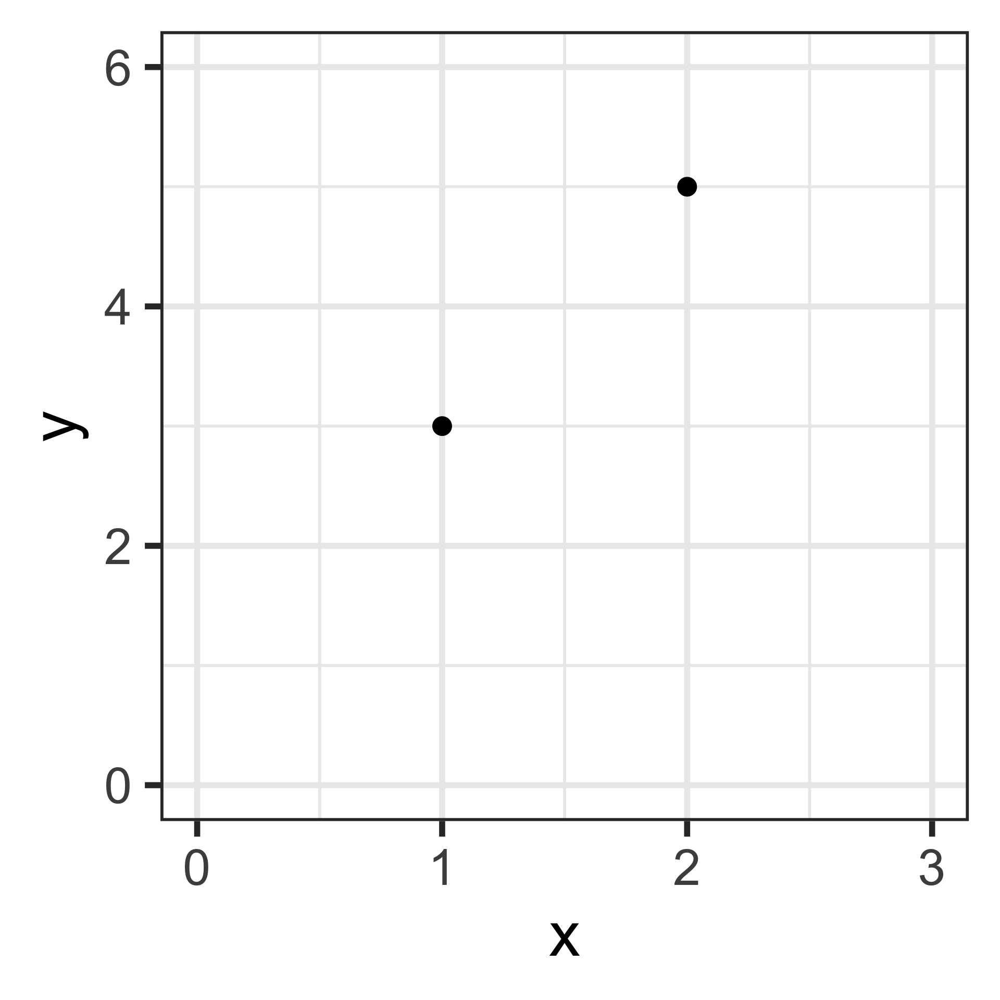
Specify our model!
In our simple dataset, we can appreciate that we have a system of equations. We have two unknowns (free parameters) and two datapoints
c(1, 3) -> \(w_11 + w_21 = 3\)c(2, 5) -> \(w_11 + w_22 = 5\)We’ll learn what is going on under the hood of model fitting next week, but for now, we can appreciate that we are solving a system of equations:
with lm():
When we have multiple data points, we are essentially solving for the best line (or hyperplane, in higher dimensions) that fits the data.
When we have more equations than unknowns we cannot solve the system directly (we have an overdetermined system), but we can find a soulution with linear algebra.
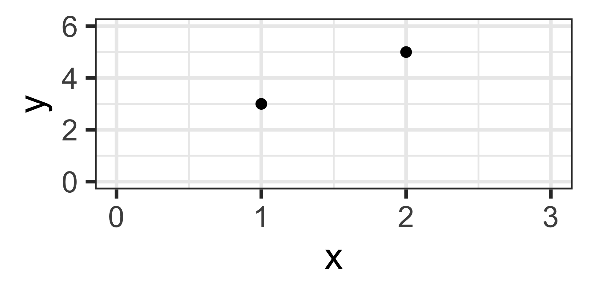
Ask chatGPT how many parameters it has.
Applied to a more complex problem
SwimRecordsHow have world swim records in the 100m changed over time?
Plot the swim records data, then use your model specification worksheet to specify the model.
What is the thing you are trying to understand?
What could explain the variation in your response variable?

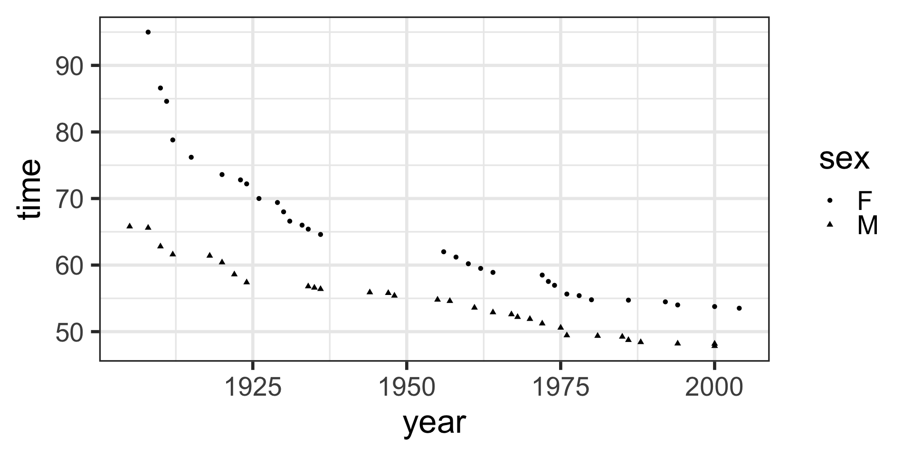
Model terms describe how to include our explanatory variables in our model formula — there is more than one way!
y ~ 1, in eq: \(y=w_1x_1\)y ~ 1 + year, in eq: \(y = w_1x_1 + w_2x_2\)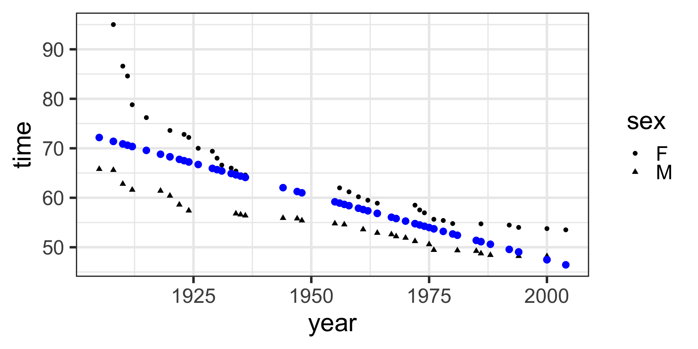
y ~ 1 + sex, in eq: \(y = w_1x_1 + w_2x_2\)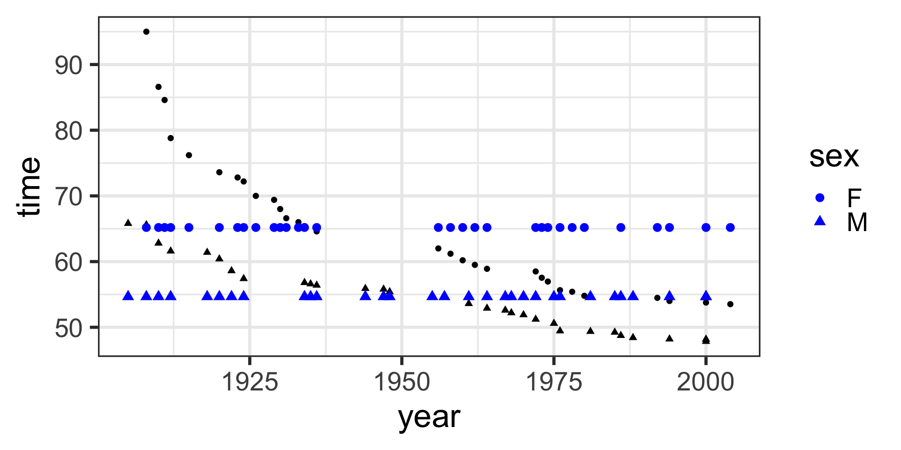
y ~ 1 + year, in eq: \(y = w_1x_1 + w_2x_2 + w_3x_3\)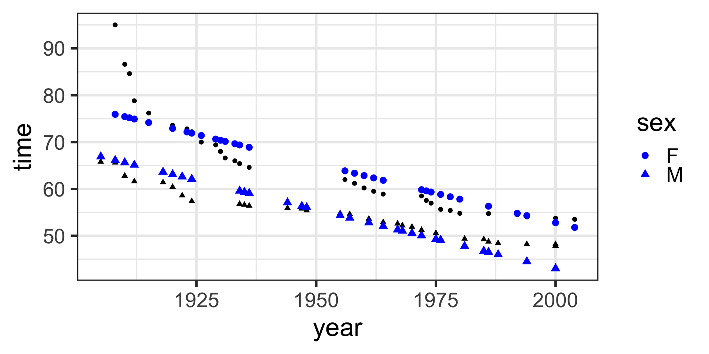
y ~ 1 + year + gender + year:gender
y ~ 1 + year * gendery ~ 1 + year * sex + I(year^2)